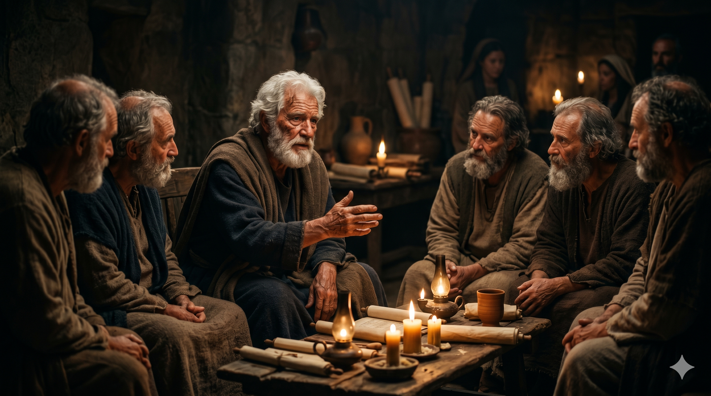

백발의 노사도 베드로가 작은 집회소에서 장로들 앞에 앉아 손을 내밀며 간곡히 권면하는 모습 — 촛불 빛이 주름진 얼굴을 따뜻하게 비추고, 눈 속에는 오랜 고난을 견딘 평화가 담겨 있다
"너희 중에 장로들에게 권하노니 나는 함께 장로 된 자요 그리스도의 고난의 증인이요 나타날 영광에 참여할 자니라 너희 중에 있는 하나님의 양 무리를 치되 억지로 하지 말고 하나님의 뜻을 따라 자원함으로 하며 더러운 이득을 위하여 하지 말고 기꺼이 하며 맡은 자들에게 주장하는 자세를 하지 말고 양 무리의 본이 되라 그리하면 목자장이 나타나실 때에 시들지 아니하는 영광의 관을 얻으리로다" — 베드로전서 5:1–4
베드로가 이 편지를 마무리하면서 교회의 장로들에게 직접 말을 건넵니다. 그는 "권하노니"라는 말 대신 자신을 "함께 장로 된 자"라고 낮춥니다. 사도의 권위를 내세우지 않고 동료로서 나란히 선 것입니다. 그리고 스스로를 두 가지로 소개합니다. 그리스도의 고난의 증인 — 그는 겟세마네에서, 대제사장의 뜰에서, 그리고 십자가 아래서 그 고난을 두 눈으로 보았습니다. 동시에 나타날 영광에 참여할 자 — 변화산에서 그 광채를 직접 목격한 자였습니다. 고난과 영광 모두를 증언할 수 있는 사람이 장로들에게 목회의 자세를 권면합니다.
그가 제시하는 목회의 원칙은 세 쌍의 대조로 이루어져 있습니다. 억지가 아닌 자원함, 더러운 이득이 아닌 기꺼이 섬김, 주장이 아닌 본보기입니다. 특히 마지막 "양 무리의 본이 되라"는 말씀이 핵심입니다. 목자는 양 위에서 군림하는 자가 아니라, 양 앞에서 먼저 걸어가는 자입니다. 그리고 이 모든 수고의 결말은 "목자장이 나타나실 때"에 주어질 시들지 않는 영광의 관입니다. 베드로는 자신이 곧 순교할 것을 알면서도 그 상급을 바라보며 마지막 권면을 씁니다.
고요한 황혼빛 들판에서 앞서 걸으며 양 떼를 이끄는 목자의 뒷모습 — 목자의 발자국을 따라 양들이 자연스럽게 따르고, 저 멀리 언덕 너머로 황금빛 빛줄기가 쏟아진다
"양 무리의 본이 되라" — 이 말씀은 교회의 목사나 장로에게만 해당하는 말씀이 아닙니다. 가정에서 부모로, 직장에서 선배로, 공동체에서 먼저 된 자로 살아가는 모든 이에게 해당됩니다. 우리는 말보다 삶으로 이끕니다. 가르치는 것보다 먼저 사는 것이 더 강력한 설교입니다. 오늘 내가 이끌어야 할 누군가 앞에서 내가 먼저 걸어가고 있는지를 돌아보게 됩니다.
"억지로 하지 말고 자원함으로" — 마지못해 봉사하고, 어쩔 수 없이 섬기는 신앙은 오래 가지 못합니다. 베드로는 자원함과 기꺼이 섬기는 마음을 강조합니다. 이것은 감정적 열정이 아니라, 목자장이신 예수님께서 주실 상급을 바라보는 믿음에서 나옵니다. 보상을 기다리는 농부처럼, 우리도 시들지 않는 영광의 관을 바라보며 오늘의 섬김을 기꺼이 감당할 수 있습니다.
주장하는 자세를 내려놓으십시오.
양 위에서 군림하는 자가 아니라, 양 앞에서 먼저 걸어가는 자가 되십시오.
당신이 이끄는 이들은 당신의 말을 듣는 것이 아니라, 당신의 삶을 보고 있습니다.